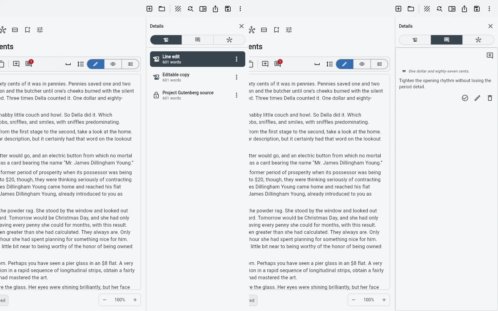

Edit the current version while you are improving the same answer. Create a new version when you are about to try a different answer.
Ctrl+Z is not a revision strategy
Undo is excellent for recovering the last few actions. It is poor at answering editorial questions a week later: what did the previous opening say, which ending did the editor see, or did the shorter rewrite actually improve the chapter?
Most edits do not need a new version
Correcting punctuation, tightening a sentence, adding a missing example or moving a paragraph can stay inside the current version. Creating a version for every small edit would turn revision history into noise.
Create a version when the direction changes
A new opening, a shorter structure, an editor pass, an alternative ending, a change of point of view, or the exact text sent to someone are useful version boundaries. The previous answer remains available while the new one is free to become substantially different.
Versions change behaviour
When recovery is easy, you can cut harder and experiment more. The feature is not mainly about archiving old text. It reduces the psychological cost of trying something that might fail.
When you do not need it
If the text is small, early, and still obviously one draft, keep writing. Versioning becomes useful when rewriting starts creating meaningful alternatives or reference points.